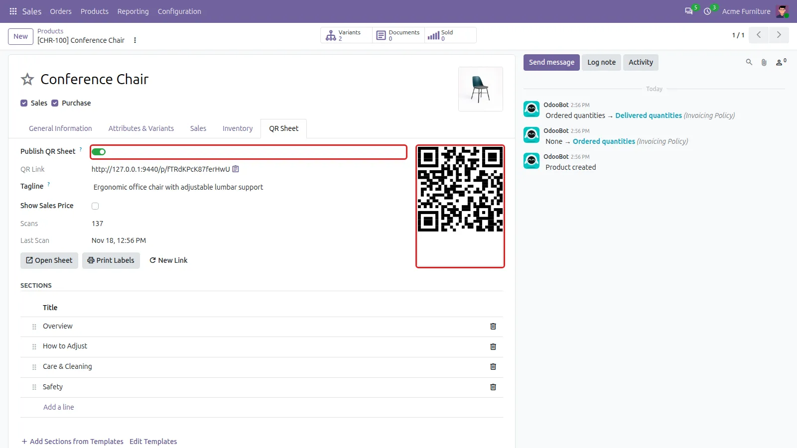
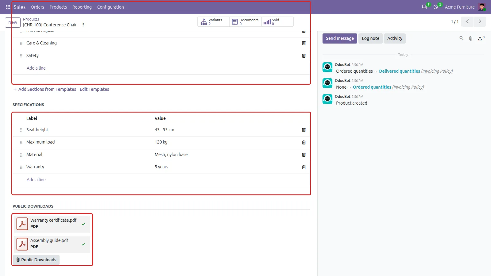
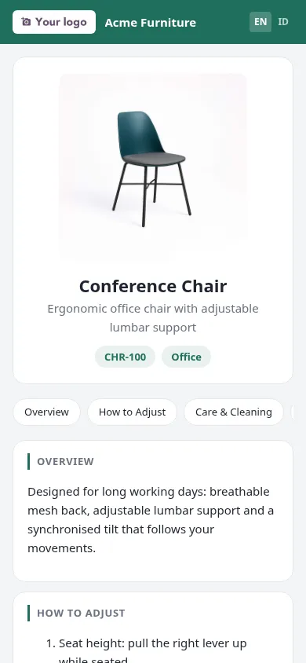
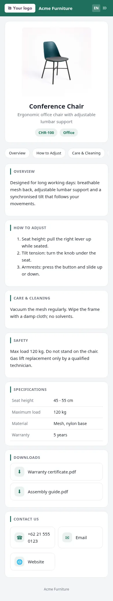
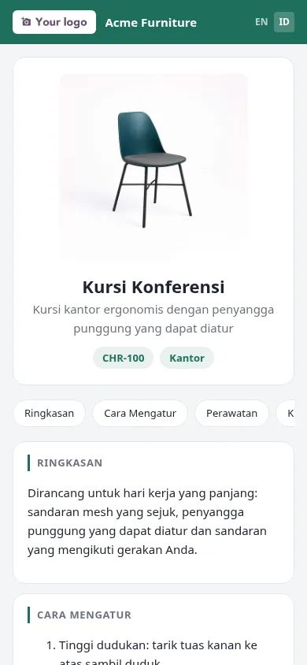
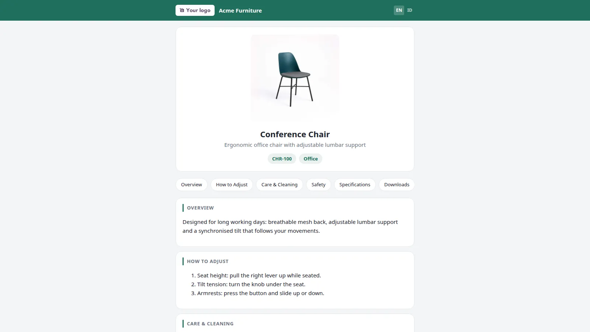
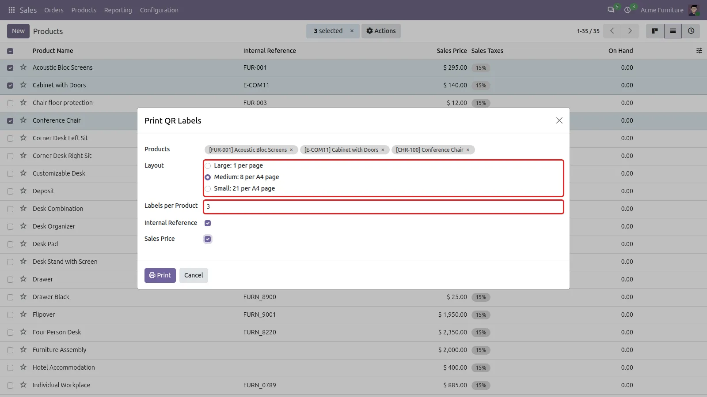
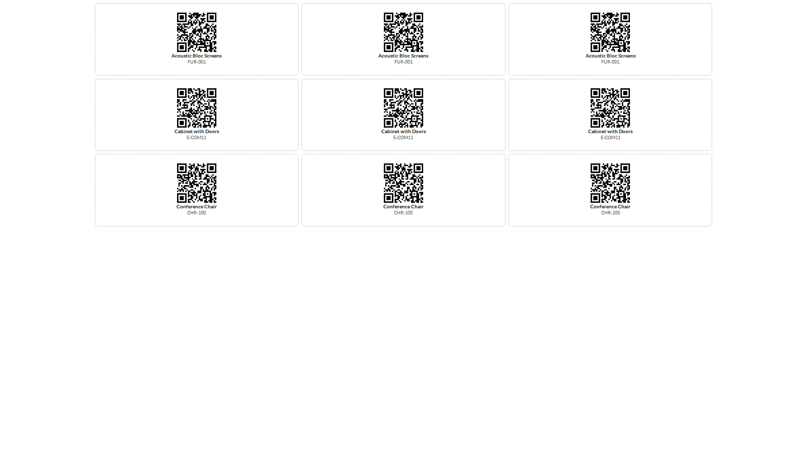
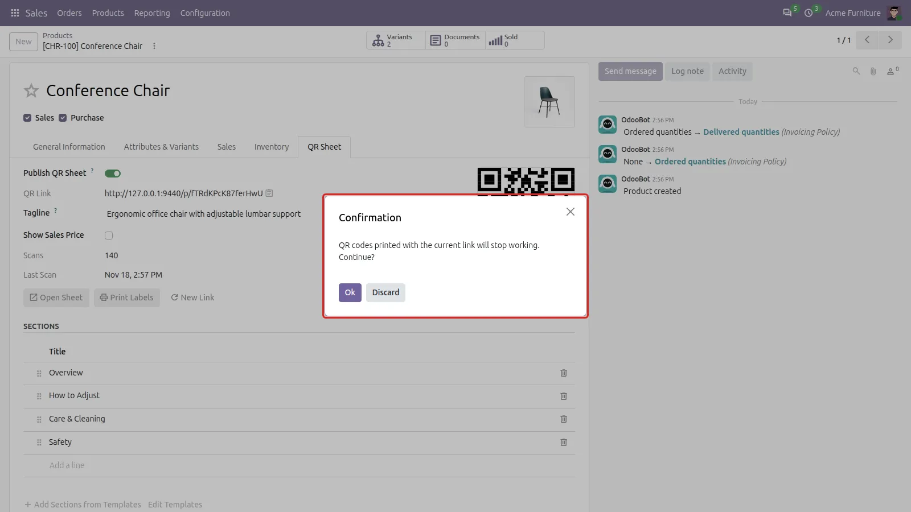
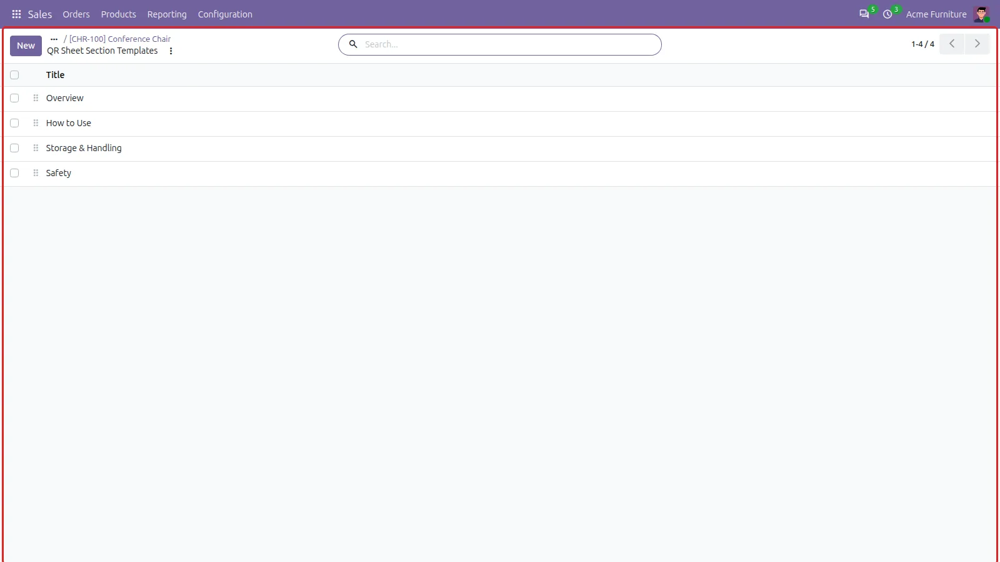

Product QR Sheet - Public Product Info Page by QR Code
Print a QR code on your products and packaging: customers and staff scan it to read a mobile product page with your sections, specifications, downloads and contact buttons, in their language. No login, no website needed.
- Price
- $19
- Odoo versions
- 17.0
- 18.0
- 19.0
- 20.0
- Technical name
tamadoo_product_qr_sheet- License
- OPL-1
Odoo 20.0: not listed on the store yet. Ask at tama.odoo@gmail.com.

Text and screenshots below are from the Odoo 20.0 version of this module.
Print a QR code on your products and packaging. Customers and staff scan it and read a mobile product page with your sections, specifications, downloads and contact buttons, in their language. No login, no website needed.
One scan, everything about the product


What you get
Mobile product page
Photo, tagline, reference, sections, specifications, downloads and contact buttons on a clean phone page.
Your sections
Overview, how to use, storage, safety... started from editable templates, written with the Odoo editor.
Specifications
A simple label / value table: dimensions, weight, materials, warranty.
Safe downloads
Datasheets, manuals and certificates: only the files you attach to the sheet can be downloaded.
Any language
Every installed language with a switcher on the page; texts are translatable. Indonesian included.
Unguessable links
A short random link per product, 404 until published; regenerate it to revoke printed codes.
QR labels
Large, medium (8 per A4) or small (21 per A4) labels, with quantity, reference and price.
Scan counter
See how often each product's code is scanned and when it was last scanned.
No website needed
Served by Odoo itself; works with Sales, Inventory or Purchase, Community or Enterprise.
Step by step
QR Sheet tab
Publish the sheet: the product gets its link and QR code, a tagline and an optional price.

Content
Sections, specifications and public downloads, all on the product.

Scanned on a phone
What a customer sees: company, photo, tagline, reference and the sections as quick links.

The whole page
Sections, specifications, downloads and contact buttons.

In Indonesian
One tap on the language switcher: the same sheet translated.

On a computer
The same link on a desktop browser.

Print labels
Select products, Action > Print QR Labels: layout, quantity, reference and price.

Medium labels
8 labels per A4 page, ready to cut.

Small labels
21 labels per A4 page for small packaging.

Revoke printed codes
New Link replaces the product's link; codes printed before stop working.

Section templates
The sections offered to every product, in your words.

Set up in 5 minutes
- Install the module (depends on product only).
- Optional: adjust the section templates from a product's QR Sheet tab (Edit Templates).
- Open a product, tab QR Sheet: publish it, add sections, specifications and downloads.
- Print labels with Print Labels on the product or Action > Print QR Labels from the product list.
- Translate the texts with Odoo's translation button to offer the page in more languages.
Requirements: Odoo 20.0, depends on product only. QR codes are drawn by reportlab and need its
PNG backend: Odoo's Debian/Ubuntu packages include it, on a pip-based Linux install run
pip install rl-renderPM (Odoo's requirements.txt lists it for Windows only), otherwise
the QR code stays empty.
Get Product QR Sheet
Odoo 20.0: not listed on the store yet. Ask at tama.odoo@gmail.com.
Questions before buying? Write to tama.odoo@gmail.com.